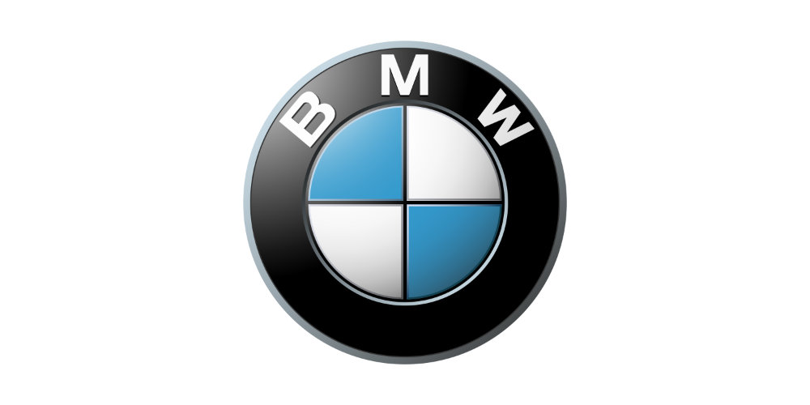

Doświadczenie
07.2024 - obecnie
Młodszy Specjalista ds. Analiz i Kontrolingu
Dealer Ford Bemo Motors Poznań
- Tworzenie raportów w programie Power BI umożliwiających monitorowanie KPI działu serwisu.
- Aktualizacja danych w arkuszach kalkulacyjnych na potrzeby cyklicznych raportów.
11.2022 - 08.2023

Specjalista ds. Analityki
Dealer BMW Smorawiński Poznań
- Przygotowywanie analiz w programie Power BI oraz aktualizowanie i nadzorowanie obecnych raportów dla działów firmy.
- Optymalizowanie procesu odświeżania raportów przy pomocy Power Automate.
- Wsparcie w zakresie tworzenia programu ETL od strony użytkownika, oraz przeprowadzenie testów w celu zapewnienia jego optymalnego działania.
07.2019 - 09.2022
Stażysta w dziale technicznym
Unilever Poznań
- Przygotowywanie raportów dla działu technicznego w programie Power BI.
- Wdrożenie systemu CMMS w programie Idhammar oraz przeprowadzanie szkoleń.
- Zarządzanie częściami zamiennymi w magazynie Lean-Lift.